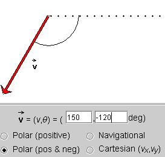

2. Polar (positive & negative). The applet is now set to this mode. Observe how the vector's angle changes as you drag the vector's tip around the origin.
In this mode, vectors are again specified by their magnitude and an angle, but the angle is defined differently. The same reference line is used, pointing horizontally to the right. However, both positive and negative angles are used, positive angles for vectors pointing somewhere above and negative angles for vectors pointing somewhere below the horizontal axis.
Starting from 0o, the angle increases (decreases) to 180o (-180o) as the vector rotates in the positive (negative) sense. 180o and -180o both specify a vector pointing horizontally to the left.
Question. What would be the angle for the vector in the Figure on Page 1 according to the "Polar (pos & neg)" method? Find the answer by using the applet.
Answer. The answer is -120o. See the Figure below.
